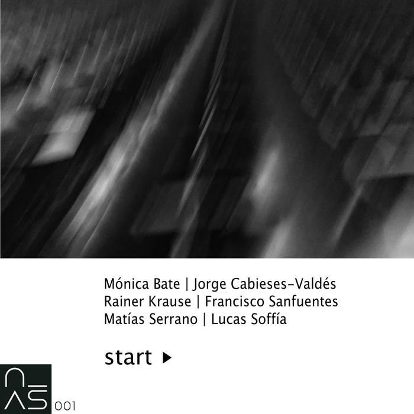
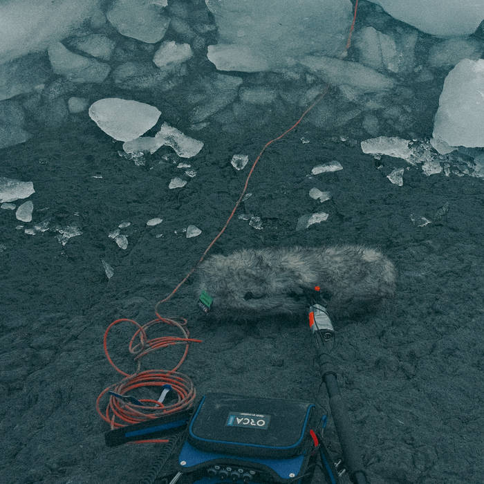

Junio, 2023

Pieza sonora generada a partir de la escucha con un hidrófono del deshielo de un témpano proveniente Glaciar Collins, que flotaba al costado de una pequeña isla. Las variaciones sonoras son producidas por el derretimiento, la sucesivas immersiones, el choque del bloque de hielo con otros, y el roce del hidrófono con la superficie congelada. La grabación forma parte del proyecto “Utopías y distopías de la modernidad” de la artista chilena Ingrid Wildi Merino, y fue realizada en Isla Rey Jorge.
Escucha en Bandcamp
Pieza publicada en el álbum start►, primera publicación del sello del Núcleo Artes Sonoras del Departamento de Artes Visuales de la Universidad de Chile
